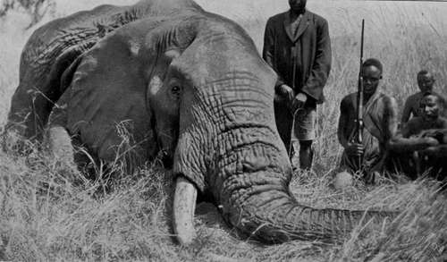

Hunting Elephant And Other Game. Part 3
Description
This section is from the book "Wild Life In Central Africa", by Denis D. Lyell. Also available from Amazon: Wild Life in Central Africa.
Hunting Elephant And Other Game. Part 3
I think Kamwendo was feeling a bit tired also, for he certainly led me through much more open country, but we found no fresh elephant spoor until about 11 a.m.; by which time we had made a long semicircle of quite fifteen miles. Then Kamwendo, who was leading the way, gave agruntand pointed down, and there I saw the absolutely fresh tracks of a fine bull elephant. He had not passed more than twenty minutes before, and his droppings were steamy and hot. This was a piece of good luck, as I had given up hopes of seeing any spoor on this day, and I had no idea I should have the good fortune to find absolutely fresh tracks. Both Kamwendo and myself knew that we would soon see this elephant, for he had been moving slowly along, feeding occasionally, and he was bound to rest soon, as the sun was intensely hot, and elephants, like human beings, prefer to slow off a bit about midday in tropical Africa.
The men were told to wait, and Kamwendo carried the .400 with strict injunctions that he was not to fire unless I told him to, a thing I have never yet asked a native to do.
Then we walked along steadily, and in about ten minutes saw the elephant standing on the opposite side of a large dambo in some long grass. On our side the grass had all been burned by the natives, but the fire had not touched the opposite side, which was annoying. The elephant looked huge as he stood flapping his ears against his sides, and every now and again blowing dust over his body with his trunk. As we were crossing the open to reach an anthill not far from the elephant, he began to move slowly into the tree bush near, stopping here and there to pick a few leaves from the trees.
As the grass was very long among the trees and I knew it would be difficult to see him from the ground when enveloped in the grass, I moved to another anthill farther on and just ahead of the elephant. He then began to ram a tree with his forehead, and he seemed to have something wrong with him, as he was never still a moment.
I changed ground again to yet another anthill, and it was fortunate I did so, as the elephant began to move to an open space about 100 yards from me. As he was busy picking some leaves, I took a steady aim for his brain and fired.
Instead of dropping in his tracks, as I had hoped, he gave one or two painful grunts and dashed past me, getting the four remaining shots in the magazine as he went by like a whirlwind. I saw the dust fly when some of these bullets cracked on his hide, but I could not tell exactly where they went. The stricken beast now ran towards the place I had first seen him standing, and, as I could see nothing when I came down from the anthill, Kamwendo and I ran towards the place where he had disappeared. We then heard a man shouting something, and, as we could not hear what he said, I told Kamwendo to go over to him and find out. I moved forward, and then saw the elephant standing some seventy yards off, and as I had got into the burned dambo and the elephant looked very annoyed, I thought I had better get under the cover of the grass again.
Elephant Bull Shot In Nyasaland. (One tusk broken short off; the sound one measured 6½ft. and weighed 551b.)
As Kamwendo approached, I heard Tereka, the other man, shout something to him, and Kamwendo passed on the message that the elephant had collapsed.
We then went close to an anthill within fifteen paces of the elephant, from where I saw the poor animal on his knees, and I could see his side moving as he breathed, so I fired another two shots, one at his head and one behind his shoulder, and he died.
Leaving our perch on the anthill, we went to look at him, and I was very disappointed to see that he had only one sound tusk ; but it was a beauty, and when I got it out I found that it weighed 551b.—afterwards it dried to 531b.—and measured 6½ft. long, and it was beautifully curved and without a crack or flaw.
The stump of the other tusk, broken short off at the lip, proved to weigh 141b., and it was all cracked and diseased.
This elephant had a bullet, about .450 bore, nickel covered, in his head, and also a .303 bullet in his shoulder.
The pain of the bullet wounds, and especially the nerve of his broken tusk, must have caused the animal tortures, and this accounted for his strange behavour in butting the tree and showing so much restlessness. I found the bullet that killed him was one of my running shots which had gone through his lungs, and Tereka told me that before the elephant fell he put his trunk in the air three times. This is a common act when an elephant is shot in the lungs, and I have seen them do it several times. It is evidently caused by the suffusion of blood in the lungs which gets coagulated and causes suffocation.
When an elephant is killed, more particularly a large old bull, it is usual to find native bullets in his carcass ; sometimes these are round and at other times oblong, and they are simply pieces of iron made in the roughest way by being hammered with stones.
It is not so common to find European bullets, although it is not unusual to do so. The large nickel-covered projectile was either a .450, .475, or .500, but it had got so misshapen that it was difficult to recognise its bore. The sportsman who fired it had evidently hit a tree, which reduced the velocity of the projectile and flattened it, so that it had no penetration in the hard bone of the skull.
It is a memorable sight to see such a large animal as an elephant die, and they sometimes die hard and make stupendous efforts to rise when they get on their knees. They also groan and sometimes scream with pain, and it is impossible to witness such a sight without feeling great pity for the suffering giant. Puny man is no longer a weakling compared to such large creatures when he is armed with a good modern rifle and knows how to use it efficiently.
Continue to:
- prev: Hunting Elephant And Other Game. Part 2
- Table of Contents
- next: Hunting Elephant And Other Game. Part 4